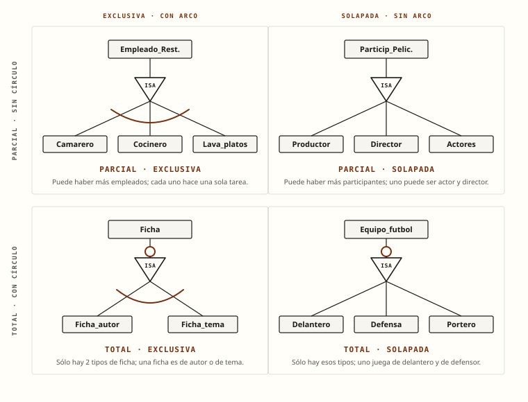

Lección 13 · Unidad 2 · Diseño conceptual
Especialización: dos marcas y cuatro combinaciones
El docente dijo que toma "especialización: exclusiva o solapada, y la parte de exclusividad". Todo el tema se reduce a dos marcas que se dibujan o no se dibujan. Esta lección es para copiarlas a mano hasta que salgan solas.
01Qué es, en una frase
Especialización es partir una entidad en subconjuntos que comparten sus atributos pero además tienen atributos propios. La cátedra lo define así, textual:
Clase 2, slide 20 "Hay casos en donde una entidad puede tener atributos compartidos y atributos propios, tal es el caso por ejemplo de la entidad persona, la cual puede compartir los atributos id persona, nombre y apellido, mientras que a su vez puede derivarse en otras entidades de nivel inferior que poseen sus propios atributos."
La entidad de arriba es el supertipo (o superclase). Las de abajo son los subtipos (o subclases). El vínculo se llama ISA — "es un" o "es una" — y se dibuja con un triángulo apuntando hacia abajo.
Clase 2, slide 24 "A estos subconjuntos menores que dependen de uno mayor se les suele denominar SubClases de la entidad Vehículo, y a su padre, Vehículo, la SuperClase de estos subconjuntos menores."
Generalización es exactamente lo mismo mirado desde abajo: partís de varias entidades y descubrís el padre común. La cátedra cierra el punto en una línea que vale la pena saber de memoria porque es candidata a pregunta teórica: "especialización y generalización son dos caras de una misma moneda" (slide 22).
02Las dos marcas. Esto es todo el tema
Sobre ese triángulo se dibujan dos restricciones independientes. Independientes quiere decir que cada una se decide por separado, y por eso salen cuatro combinaciones. Las reglas de dibujo las dicta la propia cátedra en los slides 25 y 26:
| Restricción | Pregunta que responde | Cómo se dibuja |
|---|---|---|
| Total | ¿Todo registro del supertipo cae en algún subtipo? | Círculo entre el supertipo y el triángulo |
| Parcial | ¿Puede haber registros que no caen en ninguno? | Sin círculo |
| Exclusiva | ¿Un registro cae en un solo subtipo? | Arco cruzando las patas del triángulo |
| Solapada | ¿Puede caer en varios a la vez? | Sin arco |
La regla en cinco palabras Círculo = total. Arco = exclusiva. La ausencia de la marca es la otra opción. No hay un símbolo para "parcial" ni uno para "solapada": simplemente no dibujás nada.
Ojo con el vocabulario, porque acá la cátedra y el libro usan palabras distintas para lo mismo. Exclusiva = disjunta = disyunta. Elmasri dice "disjunta"; el docente dijo "exclusiva" y habló de "la parte de exclusividad". Usá la palabra del docente en la hoja.
03Las cuatro combinaciones, con los ejemplos de la cátedra
Esto es lo mejor que tiene el deck: los slides 25 y 26 traen exactamente un ejemplo de cada una de las cuatro combinaciones. Si te sabés estos cuatro dibujos, tenés el tema entero. Son los que están reproducidos acá abajo, con la notación de la cátedra:

Y las justificaciones textuales del docente, que son el modelo de cómo se argumenta:
| Ejemplo | Combinación | Justificación de la cátedra (textual) |
|---|---|---|
| Empleado_Restaurante → Camarero / Cocinero / Lava_platos |
Parcial Exclusiva |
"Parcial: puede haber más empleados." "Exclusiva: un empleado sólo realiza una tarea." |
| Participantes_Película → Productor / Director / Actores |
Parcial Solapada |
"Parcial: puede haber más participantes en una película." "Solapada: un participante puede ser actor y director." |
| Ficha → Ficha_autor / Ficha_tema |
Total Exclusiva |
"Total: sólo hay 2 tipos de fichas." "Exclusiva: una ficha es del tipo autor o del tipo tema." |
| Equipo_fútbol → Delantero / Defensa / Portero / Centrocampista |
Total Solapada |
"Total: sólo puede haber esos tipos de jugadores en el equipo." "Solapada: un jugador puede jugar de delantero y de defensor." |
El patrón de la justificación Mirá cómo argumenta el docente y copiale la fórmula. Total/parcial se justifica hablando del conjunto ("sólo hay 2 tipos", "puede haber más"). Exclusiva/solapada se justifica hablando de un individuo ("un empleado sólo…", "un jugador puede…"). Si tu justificación no tiene esa forma, probablemente estés mezclando las dos restricciones.
04Una advertencia sobre el deck
Atención · el deck tiene dos notacionesEl slide 27 ("Simbología ISA · Total, Exclusiva") muestra un diagrama de Vehículo → Diesel / Nafta dibujado en la notación de Elmasri: línea doble para la participación total, un pequeño círculo con una letra adentro, y el símbolo de subconjunto (⊂) sobre cada pata. No es la notación de los slides 25 y 26.
Dibujá la de los slides 25 y 26: triángulo, círculo, arco. Son los únicos slides donde el docente escribe la regla de dibujo explícita ("se grafica con un círculo", "se grafica con elipse"), son cuatro ejemplos completos y son la notación con la que está resuelto el TP1. La del slide 27 es una figura suelta del libro.
05Ahora dibujás vos
Cerrá esta página. Papel y lapicera. Para cada uno de estos cuatro enunciados dibujá el ISA completo (supertipo, triángulo, subtipos) y decidí las dos marcas. Escribí al lado la justificación con la fórmula del docente. Después abrí el desplegable y comparás en otro color.
- TP1 Farmacia. "Cada farmacia tiene sus propios empleados y un solo farmacéutico a cargo. Del personal propio hay que conocer fecha de ingreso y antigüedad. Del farmacéutico, la matrícula y la fecha de graduación."
- Universidad. "De las personas de la facultad registramos alumnos y docentes. Hay personal administrativo que no es ni una cosa ni la otra. Un docente puede estar cursando una carrera de posgrado en la misma facultad."
- Biblioteca. "Todo ejemplar del catálogo es o bien un libro, o bien una revista. De los libros guardamos el ISBN; de las revistas, la periodicidad."
- Banco. "Algunos clientes son además empleados de la casa, y de ellos guardamos el legajo interno. Otros son accionistas, y guardamos su cantidad de acciones. Hay quienes son las dos cosas, y la enorme mayoría no es ninguna."
- Biblioteca, el personal. "Todo empleado de la biblioteca o atiende el mostrador, o cataloga material, o hace las dos cosas. De los que atienden guardamos el turno; de los que catalogan, la especialidad."
- Club. "Algunos socios compiten en natación y otros en atletismo; el reglamento no permite competir en dos disciplinas. La mayoría de los socios no compite en ninguna."
La trampa que traen el 5 y el 6 · no le hagas una cajaLos dos enunciados te tientan a inventar un subtipo de más:
- En el 5, "o hace las dos cosas" tienta a crear un subtipo "Todólogo" para la intersección.
- En el 6, "la mayoría no compite en ninguna" tienta a crear un subtipo "No compite" para el resto.
Las dos cajas sobran, y por el mismo motivo. Esos dos hechos ya están dichos por las marcas: la intersección la modela el arco ausente (solapada) y el resto lo modela el círculo ausente (parcial). Si dibujás la caja, estás diciendo dos veces lo mismo — y encima creás una entidad sin ningún atributo propio, que es la prueba de que no es un subtipo legítimo.
Test: si el subtipo que estás por dibujar no tiene atributos propios ni relaciones propias, no es un subtipo. Es una marca que te falta poner.
Antes de dibujar · aplicá el test ISA Leé la frase de abajo hacia arriba: "un subtipo es un supertipo". Si no suena bien, no es una especialización. "Una caja de ahorro es un cliente" es falso — un cliente tiene una cuenta, y "tener" es un rombo, no un triángulo. El verbo del enunciado te delata: ser → ISA, tener → relación.
Comparar con la corrección
-
Empleado → Personal_propio / Farmacéutico. Total y exclusiva.
Círculo y arco. Total porque el enunciado sólo contempla esos dos tipos de
empleado; exclusiva porque un empleado o es propio o es farmacéutico, no las dos.
Así está resuelto en
Rta-TP-Farmacia.erdplus(totalSpecialization: true,Disjointed) — es el único punto de esa resolución que podés tomar como confirmado. - Persona → Alumno / Docente. Parcial y solapada. Ni círculo ni arco, el diagrama más "pelado" de los cuatro. Parcial porque el administrativo no cae en ningún subtipo; solapada porque el docente-alumno de posgrado cae en los dos. Las dos frases del enunciado están puestas justamente para forzar cada marca: aprendé a olfatearlas.
- Ejemplar → Libro / Revista. Total y exclusiva. Círculo y arco. "Todo ejemplar es o bien… o bien…" es la formulación canónica de total + exclusiva. Es el mismo caso que la Ficha del slide 25.
- Cliente → Empleado / Accionista. Parcial y solapada. Ni círculo ni arco. "Las dos cosas" → solapada. "La enorme mayoría no es ninguna" → parcial. Fijate que los dos subtipos traen atributo propio (legajo, cantidad de acciones): sin eso no habría razón para especializar.
- Empleado → Atención / Catalogación. Total y solapada. Círculo sí, arco no. "Todo empleado o… o… o las dos cosas" es la formulación canónica de total + solapada: el "todo" cierra el conjunto, el "las dos cosas" abre el solapamiento. Es el caso del Equipo_fútbol del slide 26.
- Socio → Nadador / Atleta. Parcial y exclusiva. Círculo no, arco sí. Dos subtipos, no tres: "No compite" no va como caja, va como el círculo que no dibujás. "El reglamento no permite competir en dos disciplinas" → exclusiva, y fijate que la exclusividad acá viene de una regla de negocio, no de la naturaleza de las cosas. "La mayoría no compite en ninguna" → parcial. Es el caso del Empleado_Restaurante del slide 25.
Sobre el "no compite" del 6: da igual si los socios que quedan afuera no compiten en nada o compiten en un deporte que el modelo no contempla. Las dos lecturas producen exactamente la misma marca: hay registros del supertipo que no caen en ningún subtipo, o sea parcial. No hace falta que el enunciado lo desambigüe.
Con los seis ya dibujaste las cuatro combinaciones: 1 y 3 son total+exclusiva, 2 y 4 parcial+solapada, 5 es total+solapada y 6 parcial+exclusiva. Si alguna de las cuatro todavía no te sale sola, ésa es la que tenés que repetir.
Lo que te tiene que quedar: las palabras del enunciado que disparan cada marca. "Todo X es…", "sólo hay", "se clasifican en" → total. "puede haber otros", "algunos", "todavía no" → parcial. "o bien… o bien", "sólo una" → exclusiva. "puede ser A y B", "las dos", "a la vez" → solapada.
¿Qué significa el círculo entre el supertipo y el triángulo ISA?
"Un participante de la película puede ser actor y director." ¿Qué restricción fija esa frase?
raw/B Clase 2 Diseño Conceptual Udeci.pptx, slides 20 a 27.
Los slides 25 y 26 son los que tenés que mirar: traen los cuatro ejemplos con la
regla de dibujo escrita al lado. Las mismas figuras están en
raw/Material_Examen/unidad 2.pdf, páginas 11 y 12.
De apoyo, Elmasri & Navathe cap. 4, sección 4.3 "Restricciones sobre la especialización y la generalización" — pero acordate de que usa "disjunta" donde el docente dice "exclusiva", y que dibuja la d/o dentro del círculo en lugar del arco. Estudiá el concepto ahí y dibujá como la cátedra.
Soy tu profe acá. Si querés más enunciados para clasificar las cuatro combinaciones, pedímelos en el chat y te tiro una tanda. Es un tema que se fija dibujando, no leyendo.